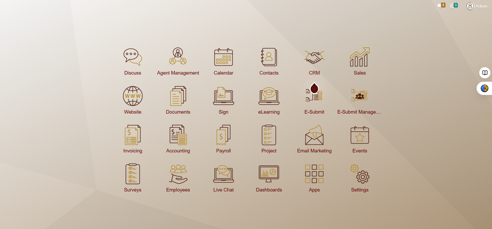

Mindlink Groups
Website.
Enhanced the company's Odoo website during my NYP internship by developing an agent management system, digital business cards, an e-submit workflow, and calendar reminders for rental agreements. These features helped simplify administrative tasks and reduce manual work.

01